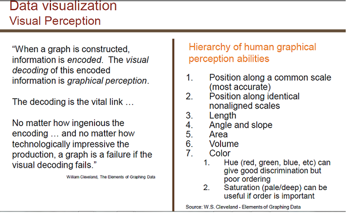

Select the Right Graph
Return to Safety Graphics Home Page
Choosing the Right Graph - What Is the Process?
Data Visualization - Page 1 - Quantitative Data Visualization
Data Visualization - Page 2 - Qualitative Data Visualization
Data Visualization - Page 3 - Factors Influencing Graph Subtype
Data Visualization - Page 4 - Data Visualization - Visual Perception

This topic: CTSpedia
> WebHome >
StatGraphHome > SelectRightGraph
Topic revision:
18 Aug 2022, WikiAdmin

Copyright © by the contributing authors. All material on this collaboration platform is the property of the contributing authors.
Ideas, requests, problems regarding Foswiki?
Send feedback